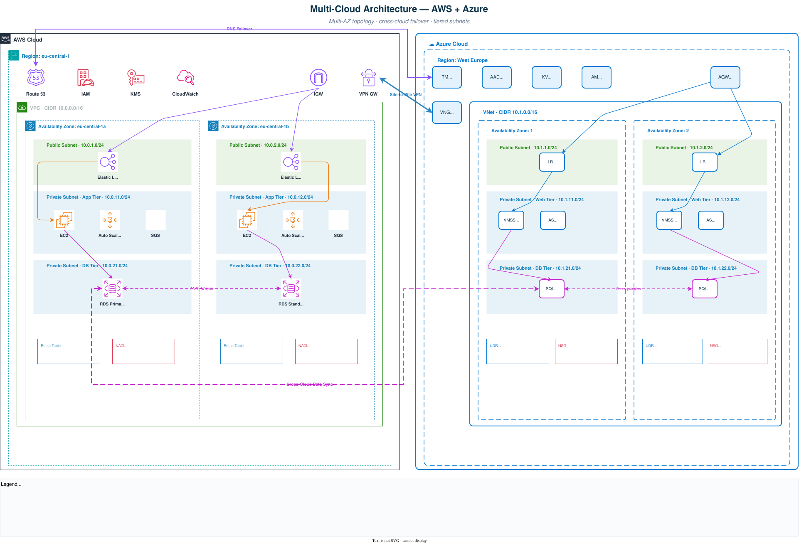

Please Wait.
A proactive AWS + Azure architecture that eliminates single points of failure, scales elastically with demand, and protects sensitive financial data through layered security controls. Engineered around ACID principles and designed to meet stringent SLA commitments across geographic regions.
Relying on a single cloud provider is a risk financial institutions cannot absorb. This architecture splits the stack across AWS and Azure so neither provider becomes a single point of failure, and every layer — network, compute, database, traffic — has an independent failover path.
Two isolated cloud environments connected through an encrypted VPN tunnel and cross-cloud data replication. AWS hosts back-end compute and the primary data store; Azure hosts the customer-facing front-end and the replicated SQL layer. Each side runs its own Multi-AZ deployment for in-region high availability.

Every major component in this architecture was selected for a specific reason. These are the decisions that shape the trade-offs between cost, resilience, latency, and operational complexity.
Each layer is designed to fail independently. A compute outage doesn't take down the network. A database failover doesn't interrupt monitoring. This isolation is what makes the overall system resilient.
A single loan application traverses both clouds, passes through a queue, touches multiple data stores, and generates telemetry — all before the customer sees a response. Each step is decoupled so a failure at any layer doesn't cascade.
Architecture choices only matter if they deliver measurable outcomes. These are the targets this design is built to meet, verified quarterly through chaos testing and real-world load simulations.
A multi-cloud migration follows a strangler-fig pattern — the new architecture grows around the existing one piece by piece. Each phase is independently testable and reversible before moving forward.